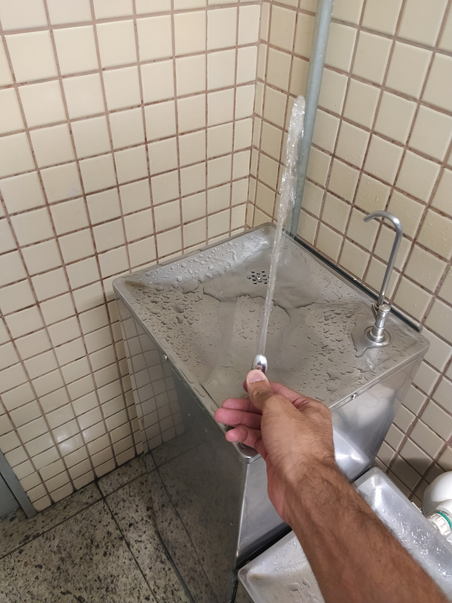
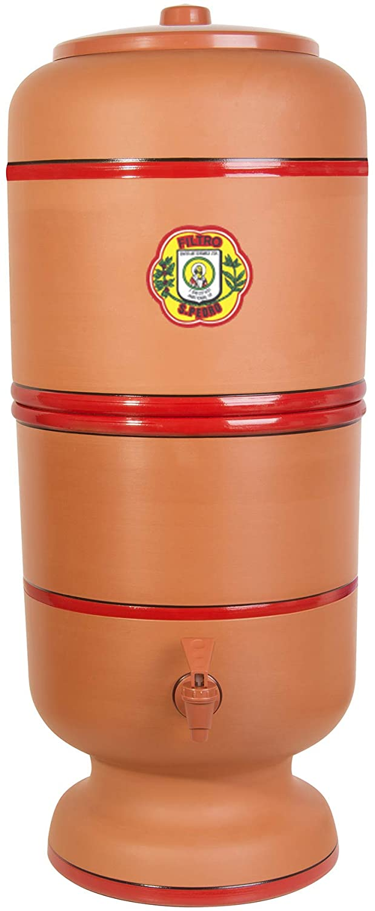
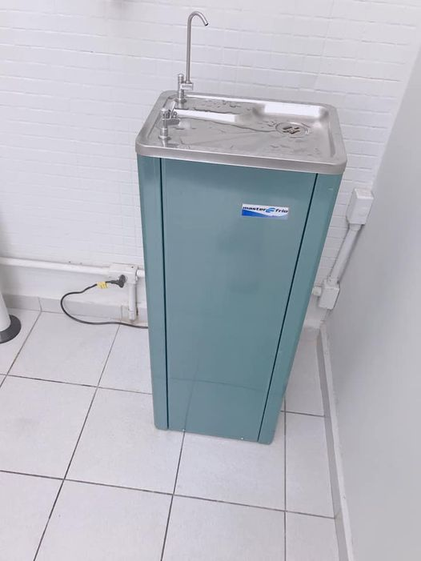

Top 3 Bebedouros
Análise de Bebedouros
- Primeiro Analisado
- Filtro Brasileiro
- 3º Analisado
1º. Acessível para cadeirantes e/ou pessoas portadoras de nanismo.
Sua pressão é o grande diferencial, enche a boca e saciar a sede,
como podem ver na foto, mas como nem tudo são flores, creio que devido
ao grande fluxo de pessoas, o bebedouro não consegue gelar a água para deixar sua testa ardendo.
Notas finais:
Localização 8/10
Pressão da água 10/10
Temperatura da água 5/10
Acessibilidade 10/10
Dando uma média de 8.25/10

2º. Também considerado um dos melhores bebedouros do mundo, o filtro de barro brasileiro além de ter
câmara de filtragem de cerâmica é bastante eficiente na retenção de cloro, pesticidas, ferro e alumínio.
e reter 95% do chumbo e 99% do parasita Criptosporidiose, o nosso filtro é um dos mais acessíveis
no mercado com o preço por volta de R$170,00.

3º.Qualidade do bebedouro : É muito bom, tem um tamanho adequado para crianças
até 7 anos beberem agua também, agua limpa e cristalinha so com um pouco de gosto de cloro
porem a agua eh de qualidade. Notei que tem uns copos plásticos ali do lado oq eu achei muito util.
Nota final : 9,8

Clique Aqui!